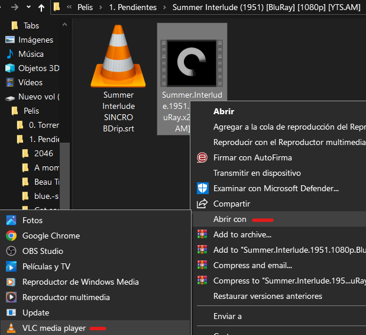
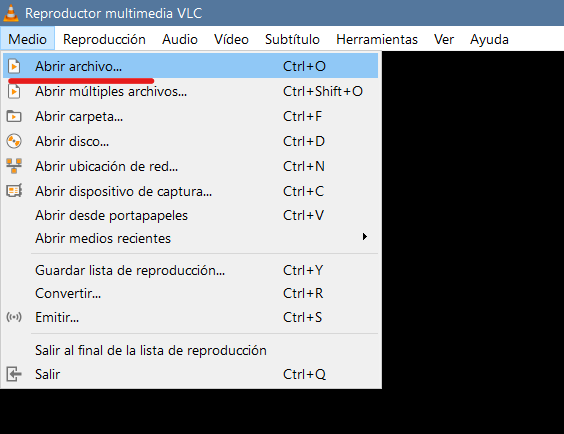
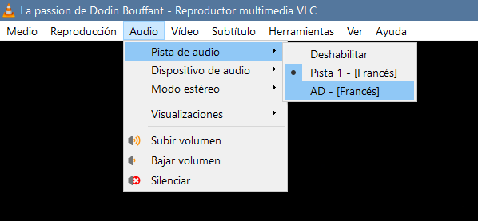
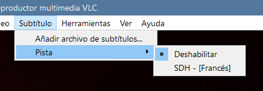

VLC en lo personal es la mejor opción en cuanto a reproductor de video,
es compatible con prácticamente todos los formatos de video, y
te permite configurar los subtítulos y audios fácilmente
Para instalarlo puedes buscarlo en la microsoft store o en su pagina web oficial
1 Podemos hacer clic derecho sobre el archivo y seleccionar abrir con y seleccionar VLC

1.2 Dentro de VLC podemos seleccionar la opción medio y abrir archivo

En caso de que la película tenga varias pistas de audio/idioma
podemos cambiarla haciendo clic en audio y seleccionando pista de audio

Tanto si la película viene con ellos como si los hemos descargado
aparte podemos seleccionarlos haciendo clic en subtítulos y pista
